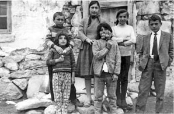
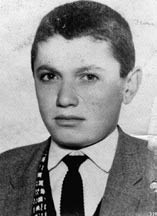
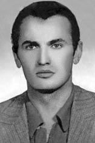

“Kenan Evren’i Diyarbakır 35 No’lu Koğuşta Görmek İstiyorum.”
İpek Keskin Gür30
12 Eylül döneminde kardeşim Orhan Keskin 28 Mayıs 1980 tarihli Diyarbakır Devrimci-Yol davasından Diyarbakır 2 No’lu mahkemede örgüt üyeliği suçuyla yargılandı. 13 yıl ceza aldı. Diyarbakır 5 No’lu cezaevinde yattı.
Darbeden Önceki Hayat
Babam Ardahanlı, Köy Enstitü’lü bir öğretmendi. Ardahan, Çetinsu Köyü’ndeydik. Köyde akşam olur, köylüler bizim eve gelir, babam onlara kitap okurdu. Köylüler o kadar ilgi duyarlardı ki, her akşam gelirlerdi, “Hoca şurada kalmıştık” diye babama üstelerlerdi. O zaman ajans dinlenirdi, radyonun diliyle köylünün dili, telaffuzu çok farklı olduğu için babam da onlara anlatırdı şöyle olmuş böyle olmuş diye... Babam çok kültürlü bir insandı, bizi de böyle bir aile ortamında büyüttü.

İpek, annesi ve kardeşleriyle
Biz 6 kardeşiz. Ben ailenin ilk çocuğuyum, Orhan da ikinci. Ondan sonra 3 tane kız kardeşim ve küçük erkek kardeşim var. 12 Eylül döneminde kız kardeşlerimden biri Van Öğretmen Okulu’nda, biri Elazığ Öğretmen Okulu’nda okuyorlardı. Diğer ikisi küçüklerdi daha, okulda değillerdi. Yatılı öğretmen okulları vardı ya, oralarda okuyoruz. Van’da okuyan kız kardeşim MHP’li. Çünkü Van Öğretmen Okulu MHP’lilerin elinde. Yani MHP’li ama, eli silahlı bir MHP’li değil. Diğer kız kardeşim demokrat bir insan. Aile olarak aslında çok dağınık yerlerdeyiz.
Ardahan’dan Çıldır’a, oradan da Silvan Yatılı Bölge Okulu’na geldik. Silvan Yatılı Bölge Okulu benim için ve Orhan için bir devrim noktasıdır. Çünkü orada farklı bir kimlik vardı. Bir halk vardı ve o halkın bir dili vardı. Bize çok yabancılardı. Biz kendimizi Türk olarak adlandırıyorduk, onlar da Kürt. Kürtçesi var, kültürü var, geleneği var. Her şeyi ile çok farklı. Biz onlarla karşılaşınca önce bir şaşırdık, sonra o insanların çok büyük bir zulümle karşı karşıya olduğunu gördük. Çünkü dilimizi anlamıyorlar, biz de onların dilini anlamıyoruz. Orhan da Silvan Lisesi 1. sınıfta. Benim kardeşim çok yakışıklıydı, uzun boyluydu, çok da sevdiğimiz için çok da bakardık. Çok da özenliydi zaten böyle gıcır gıcır pantolonlar, ayakkabılar... Bir de Yatılı Bölge Okulu Müdürü’nün oğlu...
Karamürsel’in Önünde Buluşacaktık
Orada öğretmeninin dikkatini çekmiş –edebiyat öğretmeni– bu çocuk yeni geldi, kim bu çocuk? Bu Silvanlı değil kesinlikle ama kimdir diye sormuş. İşte gençlik... Elinde tespih, kimseyle konuşmuyor. Ayakkabılarının altına o zaman demir çaktırırlardı tak tak... Yürüyüşü öyleydi.
Tabii oradaki o insanlarla tanıştıktan sonra benim orada bir sevgilim oluyor. Benim sevgilim, Özgürlük Yolu var Kürtlerin, Özgürlükçü. Çalıştığım okul Özgürlükçülerin elinde ama o arada okulda bir öğretmen var, o Devrimci Yol’cu. Ben ondan öğreniyorum Devrimci Yol’un varlığını. Silvan’daki bu devrimci hareket, Silvan’da Devrimci Yolcu diye birisiyle tanışmam, Orhan’ın da orada onlarla tanışmasıyla bizim hayatımıza devrim diye bir şey giriyor.
Orhan liseyi Suşehri’nde bitirdi. Ben Silvan’dayken bir Kürt’le evlendim. O Kürt de Özgürlükçüydü. Ben ondan sonra hem TÖB-DER’e hem de devrimci hareketlerin içerisine girmiş oldum.

Orhan Keskin
Bu arada ülkede korkunç şekilde bir faşist saldırı var. Yani fabrikalar, hastaneler, yollar, köyler her yer korkunç. Bu faşist saldırıya karşı devrimciler de örgütleniyor fabrikasında, sokağında, tarlasında, evinde ki bizim evimiz de 24 saat devrim ve sosyalizm konuşulan bir evdi. Onun arkasından Orhan, Diyarbakır Eğitim Enstitüsü’nü, Matematik Bölümü’nü, kazanıyor. Ben de Diyarbakır’da evliyim. Bizim yanımıza geliyor. Ben, Orhan geldikten 1 yıl sonra, eşimi beyin kanamasından kaybediyorum. Kızım Özgür’le babamın evine dönmek zorunda kalıyorum, Orhan yurda taşınıyor, profesyonel devrimciliği de Diyarbakır’da böylece başlamış oluyor. Devrimci Yol’un Güneydoğu bölgesi sorumlusu konumunda. Şimdi aile içerisinde bu ne demek, her an her dakika kötü bir haberin kapıdan içeri girmesi demek.
Diyarbakır’dan arkadaşlarım var, onlarla da görüşüyorum. Onlar sürekli Orhan’dan bahsediyorlar. Orhan bu arada toplantılara katılıyor, panellere katılıyor. Artık Devrimci Yol etrafında, örgüt onun etrafında örgütleniyor. Eğitim Enstitüsü onun etrafında örgütleniyor. Herkes tarafından anlatılıyor. Babam seviniyor buna. Hatta çoğu insanın, çocukları “Okula gitmiyoruz, faşist işgal altında okulumuz” dediğinde babası “Yani orada direnenler adam değil mi? Git gerekirse orada öl ama faşistleri okulundan kov gibi’ gibi şeyler çok söylemişlerdir, birçok babadan duymuşumdur. Emperyalizmin baskısı, faşist işgal, devletin faşist baskıları karşısında bütün gençler sanki devrimcilik onların kucağına atılmış gibi bir durumdaydılar, başka bir seçenekleri yoktu. Ben bugün bile aynı şeyi düşünüyorum, devrimci olmak zorundaydınız. Bir de karşılarında yani 1968 kuşağından gelme çok güçlü liderler vardı. Deniz Gezmiş... Bir Mahir Çayan’ın Kızıldere’ye gidip de arkadaşı için ölmesi, Sinan Cemgillerin Nurhak Dağları’na Deniz’i idamdan kurtarmak için gidip faşizme karşı savaşıp o uğurda ölmeleri…Yani bunlar gençleri böyle titreten şeylerdi. Modeller çok güçlüydü ve amaçları yaşanılır bir dünya, yaşanılır bir ülkeydi, talepleri devrimdi tabii ki.
Ben bile o gün diyordum ki bu ülkeye mutlaka devrim gelir. Bunun hiç kurtuluşu yok. Çünkü TÖB-DER çevresi öyle, işçi sınıfının örgütlenişi öyle, mitingler yapıyoruz binlerce insan akın akın geliyor. Öyle bir şey yok yani. Bu devrimdir, nedir ki? Direniş komiteleri var bölgelerde. Mesela ben Dikmen’de direniş komitelerinde çalıştım. Müthiş güçlüydük. Yani diyordum ki, buradan bir düdük çalsak herhalde herkes Kızılay’a iner. Bir arkadaşım vardı. Van’da görevlendirmişler, oraya gidiyor eşiyle. Bana diyor ki: “Bu ülkeye devrim gelecek nasıl olsa. Ben gittiğim yerden Karamürsel’in önüne gelirim, sen de Dikmen’den Karamürsel’in önüne inersin... Tabii orada devrim coşkusu vardır. Çok da kalabalık olur, birbirimizi 1 saat ararız, 1 saat sonra ya sen devrim için ölmüşsündür ya da ben. Kalan devrim bayrağını yürütür.” Arkadaşımı geçen sene 12 Eylül mahkemelerinin önünde gördüm. Tabii o beni tanımadı. Dedim ki, bu ülkeye devrim gelmedi ama biz 12 Eylül’ü yargılamak için buradayız. İpek sen misin dedi, evet benim dedim. Ağladım. O da ağladı tabii. Böyle hayallerimiz vardı. Bunun içerisinde babamın da güzel hayalleri vardı ama yine de Orhan’ı devrimci olmaktan, dağa gitmekten, gerilla olmaktan kurtarmak için 3-4 defa Diyarbakır’a gitti. Çok yalvardı. Ama Orhan inandığı yoldan dönmedi.
Annem evi Ankara’ya taşıdı Orhan gelsin diye ama Orhan hiç gelmedi eve, geriye dönmedi. Eğitim Enstitüsü’nü bitirdi, Sivas’a atandı, öğretmenliğe başlamadı. Zaten o artık profesyonel devrimci olmuştu. Devrimci Yol’un liderlerinden biriydi. Yani onun mücadeleyi bırakıp da öğretmenliğe döneceğini hiç düşünmüyordum. Zaten o da böyle bir şey yapmazdı. Orhan bir kere Ankara’ya geldi. Ankara’daki evimize vurulmadan önce ilk ve son gelişiydi. Burada işleri varmış. Ben de Hamzalı Köyü’nde öğretmenim. Ben de gelmişim Orhan gelmiş diye, köye geri gideceğim. Annem ağlıyor. Biz ağlıyoruz, ne olursun gitme yeter, diyoruz. Evlerde soba olurdu o zaman, doğalgaz nerede? Sobanın başında durup böyle ayaklarının üzerinde ileri geri sallanmayı çok severdi. Yine orada duruyor, annem dedi ki: “Oğlum gitme artık. Bak buraya geldik. Sana burada bir iş bulalım. Öğretmenliğe de gitmedin. İş de bulmayalım, evde kal, artık gitme.” “Senin gibi çok analarım var. Gitmek zorundayım, ben işimi yarım bırakamam, ben ölürsem senin bir oğlun daha var, onunla idare edersin” dedi anneme. Ertesi gün gidecek ama ne kadar idealist devrimci olursanız olun asla kardeşinizi kaybetmeye gönüllü olmayı getirmiyor bu durum. Ben önüne geçtim “Gitme” dedim. (ağlıyor) “Gitmem gerekiyor, gideceğim” dedi. “Ben de geleyim o zaman, garaja kadar geleyim” dedim. “Sakın” dedi. “Sakın sakın. Kapıyı kapat, ben çıkıyorum.” Yani Orhan’ı karşımda görüşüm en son bu şekilde oldu.
Orhan Yakalanıyor
Annem ona hep derdi: “Oğlum devrimci ol hiçbir şey demiyorum, devrim için çalış ama devrim için ölme. Devrim için ölenlerden birisi sen olma.” Diyarbakır Eğitim Enstitüsü’nü yöneten müdür de Orhan’a devrimcilik döneminde aynı şeyi söylemişti: “Sakın devrim oluncaya kadar öleyim deme, sen lazımsın”. Bu esnada Mardin’de, Dirik’te, Urfa’da, Kızıltepe’de, Mazı Dağı’nda, Dar Geçit’te Orhan’ın ayak basmadığı mezra, köy kalmamıştı.
Sonra 1980’in Mayıs’ında Gün Sazak, Ankara’da öldürüldü. Aynı gün Diyarbakır’da Devrimci Demokrat Kürt Derneği (DDKD) ve Devrimci Yolcular arasında bir çatışma olmuş. Şimdi tabii bugün hepimiz ezilen, sömürülen, yok edilen halklardan yanayız ama o zamanki Kürdistan’da Kürtçü grupların hiçbirisi Kürt olmayan, devrimci solu kabul etmezlerdi. Ben bunu çok yaşadım, özellikle TÖB-DER’deki çalışmalarımda. O dönemde de öyleydi. Onlar da Orhan’ı ve arkadaşlarını Devrimci Yol olarak asla kabul etmiyorlardı. Onun için sürekli bir çatışma halindeydiler. Orhan trafik bahçesinde otururken, arkadaşları geliyor, bizi DDKD’liler dövdü diyorlar. Orhan da onları alıyor ve diğerlerinin üzerine yürüyor. O sırada bir silahlı çatışma oluyor. Anneler bilirler. Gerçekten o yüreğinin sızısından hissederler. Annem zaten gece gündüz Diyarbakır’da uyuyor, uyanıyor, Diyarbakır’dan gelecek bir haberi bekliyor. Gün Sazak öldürülmüş, akşam haberleri izliyoruz.Televizyonda şöyle bir haber geçti: Diyarbakır’da 2 sol grup arasında çatışma yaşandı. Annem bir çığlık attı. “Bu grubun içerisinde mutlaka Orhan vardır.” Anne yoktur diyoruz. “Hayır” dedi, “Bu grubun içerisinde kesin Orhan vardır, yüreğime sızı düştü.”
Orhan ve diğerleri orada çatışırken asker basıyor. Denizlili bir yüzbaşı var. Orhan kaçıyor. Diğer arkadaşları kaçarken Diyarbakır’da surların altına sığınıyorlar. Gürcan Bahadır, aynı davadan yargılanan, örgütten arkadaşı der ki: “O surlardaki bütün taşlar üzerimize yağıyordu. O kadar büyük bir çatışma vardı. Yani nasıl ölmüyoruz orada onu daha anlamış değilim.” Orhan bunlara işaret ediyor kaçın diye. Yüzbaşı bunu fark ediyor, Orhan’ı kolundan vuruyor. Kolundan vurulunca, can acısı, hemen düşüyor. Orada yakalanıyor. Benim amcamın kızı da o ara Tıp Fakültesi’nde başhemşire. Tesadüf o da oradan geçerken Orhan’ın düştüğünü görüyor ve hemen Tatvan Yatılı Bölge Okulu’nu arıyor, “Orhan ağabeyim ağır yaralandı, amcama söyleyin hemen gelsin” diyor. Babam oraya gidiyor. Biz babamı arıyoruz arıyoruz, bulamıyoruz. O sırada Diyarbakır’da benim görümcem var. O bize gelmişti. Böyle rengi benzi gitmiş. Hemen kolumu tutu. “Gel buraya” dedi. Ne oldu dedim. “Orhan vuruldu. Ağır yaralı olarak hastaneye kaldırıldı” dedi. Tabii biz hemen Ankara’dan apar topar kalktık, Diyarbakır’a gittik.
Orhan Tıp Fakültesi’nde 45 gün yattı. Doktoru Devrimci Yolcu’ydu. O yaralı haliyle işkencecilere teslim etmek istemedi. Bir şekilde 45 gün o hastanede yatırdı. Sıcaklar bastırdı. Babam 48 derece Diyarbakır’ın sıcağında, orada kaldı. Biz tabii 1-2 gün kaldık. Orada kalamazsın, görüştürmüyorlar. Ama şöyle bir şey de oldu orada; babam Tatvan Yatılı Bölge Okulu’nda çalışırken oraya bir gece ben nöbetçiyken bir grup polis geldi. Misafir olarak Bitlis’e gelmişler eğitim için. Nerede kalabiliriz? Tatvan Yatılı Bölge Okulu. Okula geldiler. Benden yemek istediler. Onlara yemekhaneyi açtık, yemek verdik. Misafirhanede konuk ettik. Biz Diyarbakır’da koşup duruyoruz. Görüştürmüyorlar, hastaneye sokmuyorlar bizi. Başlarına polis dikilmiş, jandarma dikilmiş. Her taraf abluka altında, Devrimci Yolcular yakalanmış. Birkaç tanesi yaralı karakolda. Babam koşturuyor tanıdık birisini bulmak için. O sırada polis babamı tanıyor. Omzundan tutuyor, “Müdür bey sen ne arıyorsun burada?” diyor. Babam “Sen kimsin?” diyor. “Ben Tatvan’a geldim, sen beni konuk ettin Yatılı Okul’da. Sen ne koşturuyorsun?” diye soruyor. Babam anlatıyor: “Oğlumu vurdular, yaralı. Hastaneye gidiyorum, görüştürmüyorlar.” O polis sivil bir şekilde geldi bizi Orhan’la görüştürdü. “Bırakın” dedi, “Ben bu aileyi tanıyorum, bir şey olmaz, çocuklarıyla görüşsünler”.
Biz bıraktık geldik artık. Yani 45 günde biz yalnızca ilk hafta kaldık. Bu olaylar Mayıs 1980’de oluyor. Zaten aile olarak polisin vasıtasıyla gördük. Ondan sonra bir daha bizi hastaneye almadılar, görüştürmediler. Babam, Orhan’ı karakola teslim edinceye kadar orada kaldı. Polisler Orhan’a kelepçe takmışlar, götürecekler doğal olarak. Babam derdi ki: “Sandım ki böyle kafatasım açıldı, beynim havaya fırladı. (ağlıyor) Orhan’ı polislerin yanında görünce... O anda avazım çıktığı kadar bağırıp Diyarbakır’ı yıkmak istedim. Benim hiçbir şeye kıyamadığım oğlum kolları kelepçeli... Polisler de bir tane değil, etrafını sarmışlar ki nasıl!” Tabii sonra geldi babam. Orhan hapishaneye böyle girdi.
Diyarbakır Cezaevi Günleri
Şimdi hapishaneye girmesi kolay da Diyarbakır Cezaevi’nden çıkması çok zor işte. Diyarbakır Cezaevi, bilinen 5’Nolu cezaevi değildi, o sonradan inşa edildi. Orası sivil hapishaneydi, Mardin Kapı’nın, surların hemen kenarındadır. Çok da hapishaneyi andırmaz aslında. Sanki böyle bir sığınma yeri gibi yapmışlardır. Bir de Orhan’ı orada gördük. Orada çok neşeliydi. Çünkü orada bulunanların hepsi devrimciydi. Gittik, kolu iyileşmiş. Kolunu kaldırdı anneme. “Üzülme bak” dedi, “Benim gibi binlerce var.”
O cezaevinden sonra tam 12 Eylül’e 1 gün kala yani 11 Eylül günü Bağlar’da Diyarbakır 5 No’lu cezaevine götürdüler. İnşaatını 35 günde mi 40 günde mi yaptılar... Hani Kenan Evren de der ya: “O kadar çoktular ki nereye koyacağımızı bilmediğimiz için alelacele yaptırdık.” 12 Eylül’den 2 ay veya 3 ay sonra görüşüne gittim. Her şey normaldi. Normal derken cezaevi sonuçta, ne kadar normal olacak, konuşamıyorsun. Sesleniyorsun. Kolun nasıl? İyi kolum. Başına şapka takmış. O zaman sivil giyiniyorlardı. Sağlığım iyi diyor. Biz Ankara’dan Diyarbakır’a gidiyoruz. Her gidişimizde “Beni merak etmeyin, ben çok iyiyim, oradan buraya gelmeyin, buralarda perişan olmayın” diyor bize. Bizim için uzak tabii ki ama yanında kalabileceğimiz aileler var. Zaten ne kadar kalabilirsiniz ki. Bir görüşüyorsunuz, bir dahaki hafta görüş olana kadar beklemeniz lazım. Başkasının evinde bir hafta kadar kalınır mı? Mümkün değil, gittiğimizde geri dönüyorduk. O günlerimiz öyle geçti. Özleyerek, geri geleceğini umut ederek, davaları takip ederek... Diyarbakır Devrimci Yol davası çok geç başlayan bir dava ve hızlı bir şekilde de sonlandırılan 40 kişilik bir davaydı.
Açlık Grevleri Başlıyor
Yıl 1981 oldu. Diyarbakır Cezaevi’ne gidiyoruz, geliyoruz, sorun yok. Görüşmeler normal devam ediyor. Tabii içeride çok dayak olduğu söylenemiyor o dönemde. Özgürlükçü’lerden Mustafa Aydın vardı, Mehdi Zanalarla beraber Özgürlük Yolu davasından yargılanıyordu. 1981’in Mart ayı gibi yine Diyarbakır’a görüşe gidiyorum. Mustafa Aydın’ın eşiyle tesadüf olarak aynı arabadayız. “Cezaevine Esat Oktay Yıldıran diye bir iç nizamiye müdürü atandı. Adam yüzbaşı. Fakat çok zalim olduğu, adam bile öldürdüğü söyleniyor” dedi. “Ne çabuk duydun?” dedim. “Ben Mustafa’nın görüşüne gittim. Beni görüştürmedi, Diyarbakır Cezaevi’nde görüş yasak” dedi. “Korkunç işkenceler olduğu söyleniyor, bilmiyoruz” diye anlattı. Oraya gittik. O zaman cezaevi böyle uluorta bir yerdeydi. Ne oturacak bir yer var, ne yiyecek içecek bir yer, hiçbir şey yok. Sadece cezaevi ve bol miktarda çamur. Yağmur yağıyor, çamurun içinde kalıyorsunuz, öyle bir yer. Bir sürü insan var. Kimisi ağlıyor kimisi bağırıyor. Herkes görüş bekliyor, görüş yok. Dediler ki Esat Oktay Yıldıran yasaklamış görüşmeyi. Diyarbakır Cezaevi’nin önünde böyle uzun bir kule var. Esat Oktay Yıldıran o kulenin tepesine çıkardı, kısa boylu, böyle kumralla sarışın arası bir şey. Elinde şöyle garip bir sopası vardı. Çizmelerini şöyle çeker ona şak şak diye vururdu... Görüş bitinceye kadar tepede beklerdi. Neyse görüş kapandı. Tabii ki görüşemedim ben, öylece geri geldim. Arkadaşım ben burada kalacağım haftaya kadar dedi. Ben gelmek zorundaydım, öğretmenim, çalışıyorum. Geldim babama anlattım: “Diyarbakır Cezaevi’nde her şey çok karışmış baba. Orhan’ı görüştürmüyorlar. Esat Oktay Yıldıran diye bir yüzbaşı var, adam çok kötü bir insan” diye anlattım. Bizim de asker kökenli bir avukatımız var, Kamuran Meral, Diyarbakır’da güçlü bir avukat. Babam hemen onu aradı. O da görüş olmadığını teyit etti ve tutukluların cezaevi içindeki uygulamaları protesto etmek için 10 günlük açlık grevinde olduklarını söyledi. Biz açlık grevinin ne olduğunu ilk o zaman duyuyoruz. Açlık grevi nedir, ne işe yarar, insanda ne gibi etkiler bırakır bilmiyoruz. Evde herkesin boğazında lokmalar düğümleniyor. Sürekli konuşuyoruz, tartışıyoruz bunu. En sonunda ziyaretine gitmeye karar verdik. Tabii ziyarete gidelim dediğimiz an yola çıkamıyoruz. Şartlarımız uygun olmuyor, aybaşını beklemek zorunda kalıyoruz, izin almamız gerekiyor. Ankara’dan Diyarbakır’a uçup gidilmiyor. 18 saat gidiyoruz, 18 saat geliyoruz, toplam 36 saat yol. Kalktık gittik. Onlar da açlık grevinden yeni çıkmışlar. Orhan geldi, camın arkasında. Onun böyle kahverengi iri gözleri vardı, parlardı peril peril... Tel örgünün arkasından bakıyor. Gözleri solmuş, rengi solmuş. Böyle süzülmüş, ezilmiş. (ağlıyor) Sadece nasılsın dedim, şöyle elimi kaldırdım. O da elini kaldırdı, bana kaldırma diyecekti galiba. Arkadan bir asker elime vurdu. “El kaldırmak yasak” dedi. O bana iyiyim diye asla cevap veremedi. İyiyim sözcüğünü söyleyecek zaman kalmadı. O kadar kısaltmışlar görüşmeleri. Hemen dışarı çıktık. Şu an bile hafızamda öyle bir şey yok inanır mısınız? O yolu nasıl geldim, eve nasıl ulaştım hatırlamıyorum...
Esat Oktay bir de yazı yazmış oraya, “Türkçe konuş, çok konuş”. Yazıyı ilk defa orada görüyorum. O gelinceye kadar yoktu o yazı.
Tabii günler geçti. Zulüm boyutunu göstermeye başladı artık. Duyuyoruz. Fakat Diyarbakır Cezaevi’nden çıkış yok bu arada. Hiç çıkış yok. 1982 yılı geliyor. Şerafettin Kaya’nın Diyarbakır’da İşkence diye bir kitabı çıkıyor. Avukat Şerafettin Kaya, Diyarbakır’da cezaevine giriyor. Diyarbakır’da Esat Oktay Yıldıran, cezaevi içerisinde bir örgüt kurmuş, işkence örgütü. Askerlerden oluşan bir zulüm örgütü. MİT’i, kontrgerillası, Kemal Yamak’ı, savcısı, hâkimi hepsi işin içinde. Canı sıkılan tutuklulara işkence yapıyor, çıkıyor. Bunu şuradan öğreniyoruz: Şerafettin Kaya işkencelerden sonra mahkemeye çıkıyor ve savcının ses tonundan savcının da işkencecisi olduğunu anlıyor. Tabii, orada bağırıyor “Sendin değil mi bana işkence yapan, seni ses tonundan tanıdım” diyor. O kitap elimize geçti. Bir şekilde bize kadar ulaştı. Kitabı bir gece bütün aile hiç uyumadan bir solukta okuduk. Bir solukta okuduk ve hepimiz perişan olduk. Nasıl kurtaracaksın ki? Kurtarılacak bir yer değil.
Babam hemen Diyarbakır’a gitti. Geri geldi. Orhan’ın savcısı Suşehri’nde babamla beraber çalışan Erhan ağabeyin karşısında olan savcı. Geliyor Diyarbakır Cezaevi’nde Orhan’ın savcısı oluyor. Babam, bunu öğreniyor, gidiyor “Seninle tanışıyoruz” diyor. Babama “Biliyorsun ya senin oğlun zaten Suşehri’ndeyken de komünistti. Öyle bir olayla da karşımıza gelmişti” diyor. Babam diyor ki, “Biz dostuz. Yedik, içtik, beraber bir geçmişimiz var”. “Vallahi devletim bana güvenmiş, beni buraya getirmiş. Ben bir şey yapamam” diyor. En azından bir beraat istesin diye düşünüyor babam da. “Ben ne sizi tanıyorum, ne de siz beni tanıyorsunuz. Bir daha beni aramaya filan kalkmayın. Ben devletime ihanet edemem” diye kestirip atıyor.
Ondan sonraki günlerde 20 günlük ölüm oruçları başladı. Ama biz bu kitabı okuduktan sonra artık Diyarbakır’daki zulmün boyutunu, Esat Oktay Yıldıran’ı öğrenmiş olduk. Ben diyorum ki, şimdi Mitki Gribçeva okumak veya İspanya İç Savaşı’ndaki işkenceleri okumak faşizmin boyutunu öğretmiyor size. Diyarbakır Cezaevi’nde bir yakınınızın olması (ağlamaya başlıyor) sizin de cezaevinde, o kapının önünde olmanız faşizmin ne olduğunu öğretiyor size. Kitaplarda okuduğumuz faşizmle Diyarbakır zindanlarında yaşadığımız asla uyuşmuyor. O çok başka bir şey.
20 günlük ölüm orucundan sonra babam yine Diyarbakır’a gitti. “Orhan’ın durumu çok kötü. Çok zayıflamış, çok bitmiş” diye geri döndü. Benim babam çok girişken biri. Kemal Yamak’ı, Esat Oktay Yıldıran’ı görmeye çalıştım ama ulaşamadım diyor. Bu arada kız kardeşim Konya’nın Kuşça Köyü’nde çalışıyordu, sömestr tatilinde Ankara’ya geldi. “Diyarbakır Cezaevi’nde açlık gevinde ölümler oluyormuş. Bizim köyden bir çocuk oradaydı, ölmüş çocuk. Cenazesini getirdiler” diye haber getirdi. Nasıl ölünür?
Bu arada açlık grevleri süresince zaten Diyarbakır’a ziyaretçinin gitmesi bir dert, gitmemesi başka bir dert, görüşe çıkmak başlı başına bir sorun. Orhan’ı benim karşıma getirmek için Orhan’a dünyanın dayağını atıyorlar. Geldi zaten 1 dakika ya görüşüyoruz ya görüşmüyoruz. Diyarbakır’da cezaevinin içerisinde bir çocuk demiş ki: “Ya bu cezaevinde uygulanan faşizm beni öldürmeyecek, ablamın ziyarete gelmesi beni öldürecek. Öyle bir zulüm ki. Ablama haber verin, gelmemesi daha iyi. Beni en azından görüş işkencesinden kurtarsın.” Böyle bir durum söz konusu.
Görüşü Kapatın, 1 Hafta Görüş Yok
Orhan 20 günlük açlık grevinden de çıktı. Tabii bu arada Diyarbakır’dan tahliyeler de başladı. Kimisi öldürüldü, tabutta çıktı. Kimisi öylesine tahliye oldu çıktı. Tahliyeler olunca Diyarbakır gerçeği de kamuoyunun gündemine girmeye başladı. Kimisi Avrupa’ya gitti Avrupa basınını harekete geçirmeye başladı. Ama Esat Oktay Yıldıran oradaydı ve zulmü de kat kat artmaya devam etti. Artık cezaevinden çığlıklar yükselmeye başladı. Ve o çığlıklar o yüksek duvarları aşmaya başladı.
1983’lere geldik, büyük açlık grevleri daha başlamadı. 1981’de Diyarbakır’da bir teslimiyet dönemi var cezaevinde. Teslimiyet şöyle: bu kadar zulme karşı insanlar nasıl bir tavır alacaklarını, ne yapacaklarını şaşırmışlar. Onun için itiraf edenler çok olmuş, daha doğrusu o zulümden kendini kurtarmak için itiraflara başvuranlar çok olmuş. 1981’le 1982 teslimiyet dönemi, zulmün en had safhaya yükseldiği dönem. 1983’e geldiğinde Diyarbakır Cezaevi’nde bir direnme dönemi başlıyor.
Biz hâlâ Diyarbakır’a gidip geliyoruz. Bir gün yine ziyaret için oradayım ama nasıl yağmur yağıyor, insanlar sırılsıklam, oturacak yer yok. Çamurun ortasındayız. Esat yine o kulenin tepesinde. Oradan indi, geldi. Biz de böyle sıraya dizilmişiz. Görüş sırasının gelmesini bekliyoruz. Önümde de bir Kürt anası duruyor. Tabii Esat içerideki herkesi tanıyor. Geldi, böyle baktı baktı “Ana” dedi, –Ana’nın da 2 oğlu bir kızı PKK davasından içeride– “sen bunları doğurmuşsun ama seni buralarda süründürüyorlar. Bunları doğuruncaya kadar taş doğursaydın” dedi. O Kürt anası başını kaldırdı, yüzüne baktı baktı: “Analar ne doğuracağını bilseydi senin anan da seni doğurur muydu?” dedi. Her taraf buz kesti. İnsanlar nefes almaktan korkuyor. Karşındaki Esat, içerideki zulüm belli. O anda ne yapacağı hiç belli değil. Yani bütün jandarmayı sizin üzerinize salabilir. Herkesi tutun içeri atın da diyebilir ki, kim yok diyecek? Kadını linç edebilir önümüzde. Nasıl kurtarabilirsin ki? Böyle sinek uçsa var ya, cız diye duyulacak. Ama Esat hiçbir şey yapmadı ve gitti. Korkunç Esat, çekti gitti. “Görüşmeleri kapatın dedi, 1 hafta görüş yok!” Ben de 18 saat otobüsle gitmişim, 18 saat gerisin geri geldim.
1981’le 1982 arasında Orhan’ın 2 mektubu geldi. Ben ona bayramda kart göndermiştim. Kız kardeşim mektup yazmıştı. Babam bir kıyafet, gömlek alıp göndermişti. O kıyafeti yıllar sonra bir arkadaşının elinde bana geldi. Bir arkadaşına giydirmiş bunu eve götür demiş öyle ulaştı bize. Şimdi müzede kullanıyoruz.
Polis Bizi Bırakmıyor
Diyarbakır’da bunlar olurken Dikmen polisi de şöyle bir şey yapıyor: Orhan vurulduğu zaman belinde silah var ama silah hiç kullanılmamış. O silah kayboldu. Orhan’ın davasında o silahın adı var ama kendisi hiçbir şekilde piyasaya çıkmadı. Artık polis mi aldı, yüzbaşı mı aldı bilmiyoruz. Ama silahın özelliği şu: hiçbir kurşun çıkmamıştı. Babamın da evde tabancası var. Ruhsatlı bir silah. Babam ziyarete gidecek, Orhan’ın mahkemesi yaklaşıyor. Tam o sırada Dikmen polisi babamı içeri alıyor. Keyfi bir uygulama yani. Alıyorlar, “Oğlunun tabancası nerede?” Babam diyor ki, “Oğlumu yakalayan devlet, polis, asker. Ben ne bileyim?” “Senin silahın var mı?” “Var.” “Nerede?” “Evde”. “Silahı getir”. Silahı götürüyoruz. Duruyor. Tekrar koyuyoruz yerine. Sorun şu ki; babamı içeri alıyorlar. O Diyarbakır’a gidemiyor. Ben okulda olmuş oluyorum. Gidemediğimiz için haber de alamıyoruz. Mahkeme başladı mı, bitti mi bilmiyoruz. Açlık grevindeler... Çalıştığım köyde askeriyeden emekli bir yüzbaşı ile tanışmıştım. Ben köyden şehre gidip gelirken ona söyledim babamı içeri alıyorlar sürekli dedim. “Niye alıyorlar, ne istiyorlar? Ne oldu, kim yapıyor bunu?” diye sordu. Dikmen Karakolu yapıyor dedim. O adam gitmiş, onlarla konuşmuş galiba. Sonra bizim eve gelmiş. Benim haberim yok, köydeyim. “Bundan sonra kimse seni rahatsız ederse, bu eve polis gelirse, seni karakola götürürlerse sen hemen bana haber veriyorsun. Böyle bir uygulama olmaz” demiş babama. Ondan sonra vazgeçtiler. Yine de bu çok zulüm bir şey sayılmaz. Türkiye’de herkesin başına gelen, en az bizim başımıza gelmiştir. Orhan’dan dolayı en az baskı gören aile biziz. Yani diğer ailelerin yaşadıkları yanında bizim yaşadıklarımız devede kulak bile olamaz.
Yanıyorlar
Evde oturuyoruz bir akşam, televizyonda bir haber: Diyarbakır Cezaevi’nde mahkûmlar kendilerini yaktılar. Bu nasıl bir şey? Niye kendisini yaksın ki? Devletin eli olmayınca mahkûm nasıl kendisini yakıyor? Babam ertesi gün yola çıktı hemen. Sonra öğreniyoruz işte: Diyarbakır Cezaevi’ne tutukluların parasıyla tiner aldırıyorlar, boya aldırıyorlar. Resim yapacaksın diyorlar. Kimin resmini: Türk bayrağının resmini yapacaksın, Türkiye’nin resmini yapacaksın, Atatürk’ün resmini yapacaksın, duvarları boyayacaksın. Resim yaptırmaktaki amaç şu: dövmek. Oradaki herkes ressam mı? Nasıl yapsın Atatürk’ün resmini, Türkiye haritasını kim bakmadan çizebilir, hem de bölgeleriyle beraber. Öğretmen olsa yapamaz ki... Dövmek için. Ferhat Kurtay, Mahmut Zengin, Eşref Anyık, Necmi Öner, bu 4 PKK’li zulmü protesto etmek için 18 Mayıs’ta kendilerini tinerle ateşe veriyorlar 21. koğuşta. Tabii büyük bir patlamayla yangın çıkıyor. Herkes şaşırıyor ne oldu diye. Selim Çürükkaya’nın O Türküyü Söyle adlı kitabındaki anlatımıyla söyleyeyim, onlar bir şey tutuştu da yanıyor sanıyorlar. Su serpmeye çalışıyorlar. Ferhat Kurtay sesleniyor: “Bu bilinçli bir yangındır, bizi söndürmeye çalışmayın, ateşi harlayın”. Tabii buna dayanılır mı? Diğer tutuklular yine de söndürüyorlar. Tutuklu çocuklardan biri Ferhat’ın başını dizlerine alıyor ve “Niye yaptın hocam?” diyor. Ferhat mühendislik okuyan bir çocuk, onun için hoca diyormuş: “Bu işi başarmalıyız. Buradaki direnişi ayağa kaldırmalıyız. Teslimiyet bizi kurtarmaz” diyor Ferhat ve konuşurken yanağındaki etler dökülüyor diğer çocuğun kucağına. Ağ-

Orhan Keskin
lama Yar türküsünün Kürtçesini çok severmiş. O çocuğun sesi de çok güzel. “O türküyü söyle!” diyor Ferhat. Çocuk Kürtçe olarak söylüyor türküyü. Çocukların kendisini yakmasından sonra Mazlum Doğan hücresinde ölü bulunuyor. Kimisi intihar etti diyor kimisi intihar ettirildi diyor kimisi Esat astı diyor. Aslı bilinmiyor. Annesinin de Mazlum’a yazmış olduğu çok güzel bir ağıdı var.
Onların arkasından yine dönüşümsüz ölüm oruçları başladı. Kemal Pir, Hayri Durmuş, Akif Yılmaz 1983’te öldüler. İşte o arada Orhan da tekrar ölüm orucuna yattı. Bunu duyduk. Babam Diyarbakır’da, Kemal Yamak’la, Esat Oktay Yıldıran’la görüşmeye çalışıyor ama nafile. Ne insanlara ulaşabiliyoruz ne Kemal Yamak’a ulaşabiliyoruz, ne o cezaevinin kapısından girebiliyoruz. Etrafımız örülü. Bütün Türkiye örülü. Ulaşamıyorsun. Babam gidiyor geliyor. Bugün 30 gün oldu, bugün 35 gün oldu, bugün 36 gün oldu, bugün 37 gün oldu... Acaba bugün su içiyor mu, acaba şeker alıyorlar mı? Ama bu arada hastalar da, Diyarbakır’daki Askeri Hastane’ye çıkarılıyorlar teker teker. Kemal Pir ölüyor, hastaneye öldükten sonra kadırılıyor. Hayri Durmuş ölüyor, hastaneye kaldırılıyor. Güya müdahele edilmiş gibi oradan ailelerine teslim ediliyorlar. Bunları tek tek yaşıyoruz. Aile içerisinde kötü günler geçiriyoruz. Bir şey yapamıyoruz, elimizden hiçbir şey gelmiyor. En son işte Orhan’ın 45. günüydü, yine babam orada Kemal Yamak’a ulaşabiliyor, bizim çocuklarımız ölüyor bir şey yapmalısınız diyor. O da diyor ki “Ankara’dan bize ‘hepsi ölse de benim kılım kıpırdamaz, ölebilirler’ dediler.”
Yıllardır Eve Gelmiyordu
İşte tam da bunlar yaşanırken, yani 45 gün dolarken Orhan hiç mahkemeye çıkmadan davası da sonuçlandı. Orhan’a 13 yıl verdiler. 13 yılı yattığına sayıyorlar, 1.5 yılı açıkta kalıyor. Bu sırada babam Esat Oktay Yıldıran’a bir şekilde ulaştı ve cezaevinin içerisine girdi. Ancak o zaman Orhan, Askeri Hastane’ye kaldırılabildi. Koluna serum takılıyor. Şimdi ölüm orucu şöyle bir şey; ölüme yatan kişi beynine yerleştiriyor, kitaplarda da var: “Niye yatıyorum? Özgürlük için, kurtuluş için. Ölüm özgürlüktür. Biz ölümü seçmişiz özgürlüğe koşmak için.” Şimdi o kişi ne kadar kendini kaybederse etsin siz ona müdahale ettiğiniz anda beyin kodlanmış ya artık, kurtuluş yok öleceğim diyor. Orhan’a ne kadar serum takıyorlarsa bir eli geliyor serumu kaldırıp atıyor. Onlar serum takıyorlar, öbür eli geliyor serumu tutup atıyor. Oradaki yüzbaşı bile babama demiş ki: “Böyle bir şey görmedim. Bu çocukların hepsi buraya ölüm orucunda ölmek üzere gelmiş çocuklar. Ne kadar müdahale ediyorsak sanki kontrollü bir şekilde öteki el geliyor serumu tutup atıyor.”
Babam, Askeri Hastane’ye gittiği zaman annem de oradaydı. Beraber gitmişlerdi Diyarbakır Cezaevi’ne. Orada Orhan’ın elini tutuyor annem, “Nasılsın” diyor. “İyiyim” diyor. “Kararımı aldınız mı mahkemeden?” diye soruyor. Babam da diyor ki “sen hiç merak etme biz temyize de gideceğiz. Bu böyle kalmayacak, zaten çok az bir cezan kaldı.”
Arkadaşı Cemal Arat ve Orhan yan yana yatıyorlar. Orhan ölmeden Cemal ölüyor. Babama diyor ki “Baba Cemal öldü, Cemal’e sahip ol”. Babam dışarı çıkıyor, sağa sola bakıyor, tabut görecek onu arıyor. Bir bakıyor ki birisini götürüyorlar. Başındaki kişiyi kolundan tutup çeviriyor kim bu diyor. Cemal ağabeyim diyor, Öldü. Artık memleketimize götürüyoruz, şimdi bize teslim ettiler. Ben yıllarca Cemal Arat’ın ailesini aradım, Orhan’ın son sözü Cemal’dir diye (ağlıyor). Bundan 2 sene önce yine Diyarbakır’a gitmiştim, Cemal Arat’ın annesini buldum, Sakine Teyze’yi. Oturduk, konuştuk. Ne anlatırız ki birbirimize, olanları anlattım. Sakine Teyze, onlar hastanede 3 gün kaldılar zaten, o 3 günde sürekli orada olan bir teyze. Orhan’ı gören, diğer ölenlerin hepsini gören bir anne. Babamla annemle olan bir kadın. Onları anlattı işte bana tekrar. Zaten annem dedi ki: bir tavuğu kesersin de çırpınır çırpınır ya, o artık öyle çırpınıyordu. İyice zayıflamış, dişleri çıkmış. Sadece midesini tutuyor. Annem de eline böyle şey almış, pamukla cildini siliyormuş. Bir görevli gelmiş: “Teyze, çocuklar o kadar halsiz kalmışlar ki, silme onların canı yanıyor şimdi. Sen iyilik yapmıyorsun oğluna, onun canı yanıyor”.
Babamlar o gece Diyarbakır’da bir otelde kalıyorlar. Ne olmuş bilmiyorum ama görüşü yasaklamışlar. “Askeri Hastane’ye 3 gün kimseyi almayacağız. Evinize gidin 3 gün sonra gelin” diyorlar ama bu arada barış da sağlanmış durumda. Kemal Yamak’la görüşmüş babam, Esat’la görüşmüş. Cezaevinde Yüzbaşı Aleaddin diye biri var. Onlarla görüşmüş, koğuşlara girmiş. Orada barış sağlanmış.
Babam annemi Ankara’ya getirdi. Ertesi günü gidecek yine Diyarbakır’a. Annem eve hasta geliyor. Bu kadar şeye nasıl dayanacak, dayanamadı. Geldi, o gece evde kaldılar. Ertesi günü babam buradan birilerini daha bulup da tedaviyi hızlandırır mıyım diye düşünürken o gece de kalmış oldu, Diyarbakır’a gitmek üzere yola çıkmadı.
Gece saat 3’te kapımız çalındı, Diyarbakır’dan sizi acele istiyorlar dendi. İşte uzun bir devrimci serüvenden sonra 1984’ün 3 Mart’ında Diyarbakır’da kaybettik Orhan’ı. Tabii babam hemen ertesi gün amcalarımla gitti. Aldılar geldiler, bir gece de evimizde kaldı. Açtık, tabutu açtık... (ağlıyor) Buraya gelirken demişler ki, Karşıyaka’ya götürelim camiye bırakalım yarın gelelim. Babam demiş ki, “Yok. Yıllardır eve gelmiyordu. Götüreceğim bu gece eve”. Yıllardır eve gelmemişti. Bir gece de beraber kaldık.
Yıllar da Geçse Aynı
Şimdi ne oldu? 29 yıldır bitmeyen bir şey. Bitmeyen... Yatıyorsunuz, uykuya geçiyorsunuz, unutuyorsunuz. Gözünüzü açtığınız an ilk aklınıza düşen... Yani başkasının aklına ne düşer? Eğlenmek düşer, gezmek düşer, bilmem ne düşer. Ama bizim aklımıza ilk düşen O. Babamı Orhan’ın ölümünden 26 yıl sonra kaybettik. 26 yıl her sabah resminin önüne geçti, “Seni nasıl kurtaramadı –sanki onun elindeymiş gibi– seni nasıl kurtaramadım?” dedi.Annem 26 yıl her sabah bir ağıtla uyandı. Her sabah... Çünkü bizim ona verdiğimiz değer başka bir şeydi. O dönemdeki bütün devrimciler gibi Orhan da devrimi tercih etmişti. Yani onların önünde sevgilileri vardı, evleri vardı, aileleri vardı, meslekleri vardı ama hiçbiri bunları tercih etmedi. Devrimi tercih ettiler. Benim kardeşim bir sevgili eli tutmadı, bir sigara yakmadı, bir halay başına geçmedi. Birkaç sene önce oğlum denize gitmek istiyor, onu gönderiyordum. Annem geldi, yaklaştı, “Kız İpek!” dedi, “Orhan’ın zamanında denize gitmek yok muydu? Niye o hiç denize gitmek istemedi? (ağlıyor) o zaman yok muydu, niye biz onu hiç denize göndermedik?”
Bir de çok konuşan bir aile değiliz. Acılarımızı çok dile getiren insanlar değiliz. Mesela diğer erkek kardeşimi nişanladık birkaç yıl önce. Nişana gittik, orada herkes birbirinin yüzüne bakıyor ama babam hiç oturmuyor. Hiç ama hiç oturmuyor, evin içerisinde sürekli dolanıyor. Gidiyor geliyor, gidiyor geliyor. Neyse nişan yapıldı. Kız kardeşimin evine geçtik. Sanki babam kendini böyle zor attı içeri. Yüksek sesle nasıl ağladı. (ağlıyor) Ondan sonra hepimiz koptuk. Herkes onu taşımış içinde, orada konuşamamışız. Nasıl ağladı, nasıl ağladı Orhan’ın ismini söyleyerek.
Yine babam mesela İpek diyecek, Sevgi diyecek... önce ağız dolusu bir Orhan diye bağırırdı. Ondan sonra hangimizin ismini söyleyecekse onu söylerdi.
Evet bu ülkede devrim olmadı. Belki onlar yürekli yaşadılar ama bilmiyorum bu ülkenin insanları, anneler, babalar bu acıları hak ettiler mi? Veya onlar hiçbir şeyi yaşamadan, sevmeden, bir halay başına geçip halay çekmeden, annemin dediği gibi bir denize girmeden devrim için ölmeyi hak ettiler mi? Ne yapmışlardı güzel bir dünya kurmak istemenin dışında? Güzel bir ülkede yaşamanın... Hırsız değillerdi, soysuz değillerdi, yolsuz değillerdi. Hepsi de kültürlüydü. Birçoğu üniversitelerini bitirmişlerdi. E onların muhalefette olmadığı bir Türkiye’de işte böyle ipsizler sapsızlar doldurdu ortalığı. Bizim devrim serüvenimiz de böyle başladı, böyle bitti.
Keşkelerimiz...
Peşinden koşturduk, çok uğraştık... Ben bazen derim ki, acaba Diyarbakır’a gelmeseydik bütün bunları yaşar mıydık? Mutlaka yaşayacaktık, orada olmasa da başka bir yerde. Evimiz de öyleydi. Babamın koca bir kütüphanesi vardı. Bir tane bile gerici bir kitap yoktu. Ne yapacaktı, bunları okuyunca neleri öğrenecekti Orhan? Keşkelerimiz olmadı ama hep dedik ki Orhan olsaydı hayatımız farklı olurdu. Çünkü bizi, evimize düşen o faşizmin bombası öyle bir dağıttı ki 29 yıldır yeni yeni kendimize gelip toparlanıyoruz. Annem 29 yıldır daha her sabah kalkar aynı şeyi söyler. Her akşam yatar aynı şeyi söyler: Orhan olsaydı acaba şu şöyle olur muydu? Benim küçük erkek kardeşim o zaman çok küçüktü. Yani Orhan’la hiçbir şeyi yaşayamadı O. Çünkü Orhan büyük, o yeni yeni büyüyor gelişiyor. Böyle konuşuyoruz, anlatıyoruz. Dedi ki: “Ne devrimci olsaydı ne başka şey ama elimden tutup berbere götüren bir ağabeyim olsaydı. Ben onun hiçbir şeyini istemedim.”
Benim keşkelerim olmuştur. Şu anda uğraşıyorum, kıyafetlerini buluyorum, resimlerini buluyorum, arkadaşlarını arıyorum. Devrimciler biraz vefasızdırlar. Orhan’ın o kadar arkadaşı vardı. 26 yıl annem bekledi acaba bir gün birisi gelir, kapıdan içeri girer ben Orhan’la şunu yapardım der mi diye ama hiç gelmediler. Ben 25. ölüm yıldönümünde yine hepsini tek tek aradım, buldum. Bugün yine ben arıyorum, ben buluyorum. Orhan’la neyi paylaştınız diye soruyorum. Çünkü biz dışarıdaydık. Onlar içerideydi, beden bedene. Nasıl öldü, nasıl başladı, açlık grevinde neler çekti? Bunların hepsini ben onlardan öğreniyorum.
Ben onu Diyarbakır Cezaevi’nden ayırmam. Çünkü PKK’liler karşı olsa bile orası Diyarbakır Cezaevi’ydi, orada bir sürü devrimci vardı. İster PKK’li olsun ister neli olursa olsun ki, Kürt halkının özgürlüğü her şeyden önde gelir, Orhan bir devrimciydi. İnandığı gibiydi ve inandığı şekilde yaşadı. Ben hep onlarla birlikte yaparım anmasını: Kemal Pir’ler, Hayri Durmuş’lar, Mazlum Doğanlar... Hepsinin resmini yaptırmışım, derneğime asmışım. Kardeşim Diyarbakır Cezaevi’nde devrimci dayanışmanın en güzel örneğini göstermiştir. Orada bir halk yok ediliyordu. Bir halk eziliyordu. Bunu önlemek, insanlığı kurtarmak için öyle kocaman bir çığlık attılar ki o ses faşizmin zindanlarını yırttı, dışarı çıktı. Bugün Kürt halkı deniliyorsa, onun dilinden bahsediliyorsa, bugün oraya Kürdistan deniliyorsa bu Orhanların, Mazlumların, Hayrilerin yani orada katledilen devrimcilerin döşediği o yolun halka özgürlük getirmesindendir. Ve en ilginç yanı: Kürt örgütlerinin hiçbirisi PKK’yi desteklememiştir Diyarbakır zindanlarında. Sadece Devrimci Yolcu Orhan Keskin ve arkadaşları desteklemiştir. Bütün Kürt örgütleri o ölüm oruçlarında bir şekilde bırakmış, teslim olmuşlardır. Bu da bilinmeli.
Hep Dışlanır Olmak Ama Yine de Umudu Taşımak
Türk toplumu, Türkiye Cumhuriyeti Devleti bizi zaten dışlamıştı. Yani biz devletin neyiyiz, ona karşı gelen, direnenleriyiz. Onu kabul etmeyenleriyiz. Doğal olarak devlet de bizi kabul etmiyor. Şöyle kabul ediyor mesela, seçim için Erdal Eren’in resmini kullanıyor ama Erdal Eren’i sevdiğinden değil. Kenan Evren’i yargılamaya gelip ona ceza vermeye gelirken yok diyor. İbrahim Kaypakkaya’nın mezarına gitmeyi niye yasaklasın, İbrahim Kaypakkaya’nın düşüncesinden korktuğu için. Veya Diyarbakır’da Mazlum Doğan’ın resmini niye yasaklasın, resim ne yapar? Ama Mazlum Doğan’ın düşüncesinden korkuyor. Orhan Keskin’i niye yasaklasın? Yani nihayetinde bir isim ama bu Devrimci Yol’un temsil ettiği düşünceden korktuğu için yasak getiriyor. Bizleri niye dışlıyor? Ben geçen gün Kara Kuvvetleri Komutanlığı’na gittim, Orhan’ın dosyasını alacağım. Kara Kuvvetleri Komutanlığı’nda görevli biri telefonda beni bana anlatıyor: Şuraya dilekçe vermişsiniz, şuraya dilekçe vermişsiniz, şurada ifade vermişsiniz... Her şeyi biliyor devlet ama bunları söylerken diyor ki sizin kardeşiniz Devrimci Yolcuymuş değil mi? Evet dedim, Devrimci Yolcuydu. Tabii dedi bu dosyayı biraz düşünmemiz lazım. Yani Devrimci Yol’un o zamanki yapısından korkuyor. Yoksa İpek Gür’den ya da Orhan Keskin’den korktuğundan değil. Dolayısıyla da korktuğu kişiye de yasak getiriyor. Anması yasaklanıyor, pankartı yasaklanıyor ve isimlerin söylenmesi yasaklanıyor. Devlet her zaman devrimcilere, demokratlara karşı kendi iktidarını kaybetmemek için yasak koyuyor ve onları da abluka altında tutmaya çalışıyor. Baskı derken ekonomik baskı da olabilir illa da içeri atması gerekmiyor. Dışarıdaki ailesine de ekonomik baskı uyguluyor. Bir yere, bir şeye talip olduğu zaman ondan vazgeçiyor. Mesela benim erkek kardeşim askerlik yaptığı zaman, komutanı bir yere götürüyor. Götürürken nasıl oluyorsa, arabanın tekerine bir şey oluyor. Adam o kadar korkuyor ki, kardeşime: “Ben senin ağabeyinin kim olduğunu biliyorum” diyor. “Ne alakası var” diyor kardeşim, “taşa denk gelmiş araba”. Adamın içindeki korku devrimci korkusu. Turgay’dan korkmuyor, taştan korkmuyor ama ağabeyi devrimci. Korktuğu orası. Tabii ki bu toplum öyle yasak getiriyor aileye. Öyle bir acı yaşatıyor. Bizi ona göre dışlıyor. Biz bundan pişman değiliz. Biz yine bildiğimiz yolda gidiyoruz. Nereye kadar gideceğiz? Tabii devrim gelmeyecek, Karamürsel’in önünde devrimi kutlamayacağız ama Orhan’ın işkencecileri Diyarbakır’da “sen bir işkencecisin” diye yargılandığı zaman biz de bununla hesaplaşmış olacağız. Ben 12 Eylül mahkemesinin önünde bir pankart açtım: “Kenan Evren’ı Diyarbakır 35 No’lu koğuşta görmek istiyorum.” Altına da yazdım: “Ben 35. koğuşta paşamı fındık ile fıstık ile beslerim.” Yeter ki orada olsun. Benim isteğim bu. Oraya gitmez tabii ama ev hapsi verilebilir, maaşı kesilebilir... Bunlar da devrimciler için çok önemli diye düşünüyorum. Zaten amacımız da bu, onları yargılatmak: Binbaşı Bilal Şen, Müdür Alaaddin Bayar, İç Güvenlik Amiri Abdullah Kahraman, İç Güvenlik Amiri Ali Osman Aydın, Astsubay Mevlüt Akkoyun, astsubaylar Adnan Gündüz, Yılmaz Yalçıner, Mehdi... Bunların hepsi orada görevli askerler. O işkenceleri yapan kişiler. “Diyarbakır Zindanları” kitaplarında da isimleri çok geçiyor. Buraya kadar getirdik, umarım bu işkencecileri de yargılatabiliriz.
Devrim her zaman gelecektir, bunun önlenmesi mümkün değil. İnsanlar acı da yaşayacak, acı da çekecek, sürülecekler de, köyleri de boşaltılacak ama bunun bir sonu yok. Devrim bu topraklara mutlaka gelecektir. Şimdi umudum şu: mesela bu kadar acıları yaşadık, 12 Eylül’de o kadar zulüm yaşatan 3500 devrimcinin katillerine şu anda “siz katilsiniz” diyebiliyoruz. Bugün bir Kürdistan konuşuluyor değil mi? Artık Kürt dilinin varlığı konuşuluyor. Bugün Deniz Gezmiş sitelerde geziyor, herkes Deniz Gezmiş üzerine yeminler ediyor. On binler Deniz Gezmiş’in mezarına akıyor. Ulaş Bardakçıların, Mahir Çayanların... Bunlar gelecektir. İşte Orhan’ı Gençlik Muhalefeti anmak istiyor... Benim devrimden umudum hiç kesilmiş değil. Torunum görür, ben göremem... Acılar çok mu çekilecek, zaten devrimci olmak yürek isteyen, bilek isteyen, cesaret isteyen bir şey. Kolay faşist olursun ama kolay kolay devrimci olamazsın. Devrimci olunca o ruhu ölünceye kadar taşırsın. Böyle bir şeydir devrimci olmak...
Duygusal Yoğunluklar
Kendi kendimize kimi zaman ağladık kimi zaman güldük... Atlattık. Psikolojik destek almadık. Kız kardeşim Neşe’nin vücudunda yaralar çıktı. Omuzlarında kocaman kocaman, etler bir araya büzüştü. Çünkü Orhan’ı çok seviyordu. Ağlayamadı, hiç ağlayamadı, farklı bir tepki verdi. Annemse şu anda alzehimer hastası.
Belki bu her ailede vardır: çok canımız sıkıldığı zaman ya da bir sorun olduğu zaman, çözemediğimizde Orhan, rüyamıza gelir. Gelir ve onu çözecek bir şey söyler. Bu, belki de çok inandığımızdan. Önce önemsemedik. Bir zaman sonra herkes birbirine anlatmaya başladı. Hepimiz yaşamışız bu olayı. Erkek kardeşim geçen sene Bolu’ya arabayla gidiyor: “Uyudum abla resmen direksiyonun başında. Bir baktım ki ağabeyim el sallıyor, bu tarafa gel bu tarafa gel diyor. Birden sıçradım ki kamyon üstüme gelmiş. Az daha uyanmasam kamyonun altında kalacağım. Ama ağabeyimi çok net gördüm elini sallıyor bana bu tarafa gel” diye anlattı. Belki çok özlediğimizden, belki çok aradığımızdan... Anneme olur, bana olur, kız kardeşime çok sık olur. Geçenlerde yine gördüm benzeri bir şey. Kapıdan içeri girdi. Beyaz bir gömlek giymiş, bir de kapıyı açtım ki “Abla yemeğe geldik” dedi. Kızlar arkasında. Susadım kalktım. İlk yıllar daha çok olurdu. Kapı çalınırdı gece, Orhan geldi diye düşünürdüm. Yani sesi duyardım böyle, gerçekten. Sesini duyardım, onun sesi gelirdi. Koşar kapıyı açardım ki kimseler yok.
Hiç Unutamadığım Anlar
Cezaevindeki o sahneyi ben hiç unutamıyorum. Ben, kolun nasıl diye soracakken Orhan’ın elini kaldırması... Acaba bana ne diyecekti? Açlık grevinden yeni çıkmış, yüzü solmuş, gözlerinin ışığı gitmiş... Özlemdir bu, sevgidir bu. Dokunmaktır. Ona vuracağım zaman askerin benim elime vurması... Orhan’ın asker bana vurduğu için üzülmesi... O anı hiç unutamadım.
Devrimci Yol’un yazı işleri müdürü Yaşathak Aslan, Orhan’la beraber Tatvan’a gelmişti. Biz de evimizi Ankara’ya taşıyoruz Orhan da gelsin diye. Ama ikisi gidecekler. Babam Orhan’a gitmeyeceksin dedi. O zamanlar babama saygısı daha başkaydı. O, babama bir şey diyemiyor ama gidecek Yaşathak’la, Diyarbakır’a geçecekler. Ben dayanamadım, kendimi dışarı attım. Biz ona hiç kıyamazdık. Hemen gitim muhasebeden maaşımı aldım. Biliyorum ki gidecek, evde tutmak mümkün değil artık. Tatvan Yatılı Bölge Okulu’ndayız. Merdivenlerden aşağıya indi idare binasına doğru, Yaşathak da çıktı. Babam çıkmadı. Annem ağlıyor. Tahmin ediyorum, Orhan gidiyor. Tutamayacaklar evde. Ben de idareden geliyorum. (ağlıyor) Merdivenlerden aşağıya siyah kadife pantolon, kareli gömlek üzerinde, iniyor, gözlerimden yaşlar nasıl akıyor. O da ağlıyor, ama gidiyor. Geldim yanına, hiçbir şey demedim. Sadece sıkı sıkı sarıldım. Cebimdeki harçlığı çıkardım. Eline hiç vermezdim, pantolonunun cebine koydum. O, insanın elini çok güzel tutar, elimi tutu, iki elinin arasına aldı. O da hiçbir şey demedi. Ben de hiçbir şey demedim. İkimiz de ağlayarak bakıştık. Elimi bıraktı gitti.
Geçen seneydi, Tatvan’a gittim. Tatvan’a iner inmez dedim ki, yatılı okula gideceğim. O merdivenlerin başında durup Orhan’ın oradan inişini göreceğim. Gittim, merdivenlerden şöyle yukarıya doğru bir baktım. Aynı o andaki gibi pat pat indi yanımdan uzaklaştı.
12 Eylül Davası
Diyarbakır’a her 18 Mayıs’ta giderim. Devrim şehitleri, cezaevinin önünde anılıyor. Benim buradaki tek amacım kardeşimin her yerde devrimci olarak yer alması, onun tanınması, bilinmesi ve ona bu zulmü yaşatanların mutlaka yargılanması. Biz Devrimci 78’liler olarak 12 Eylül mahkemesine çok hâkimiz. Gerçekten Yüksel Caddesi’nde 8 yıl boyunca 18 Mayıs İbrahim Kaypakkaya’nın ölüm yıldönümünden başladık, 12 Eylül’e kadar her gün stand açtık: “Darbeciler yargılansın, 15. madde kaldırılsın” dedik. AKP darbe iktidarı ürünüdür. Hiçbir zaman da darbecileri yargılamaz, darbecileri ancak devrimciler yargılar. Ne yazık ki Türkiye solu bu mahkemelere sahip çıkmamıştır. Biz solun vicdanı adına bu mahkemeye birçok belge sunduk. İdam edilen bütün arkadaşların dosyaları var bizde. Hepsini Mehmet Oruç aracılığıyla sunduk. Hepsinin müdahilliği kabul edildi. Yani 12 Eylül mahkemelerinde Devrimci 78’liler Federasyonu’nun sunduğu dosyalar müdahil olarak kabul edilmiştir ve onun üzerinden yürüyor. Bunun yanında nisan ayı içerisinde işkencecilerin mahkemesi açılacak. İlk olarak Ankara’da Mamak Cezaevi işkencecilerinin mahkemesi olacak. Diyarbakır’ı bekliyorum. Açıldığı zaman tabii ki mahkeme sonuna kadar da Diyarbakır’da cezaevinin önünde olacağım. Amacımız o, hesap sormak. Onlarla hesaplaşmadıktan sonra geleceğimizi tabii ki hazırlayamayız.
Ben zaten bunu bekliyordum. Dava açılmalıydı. Bu, Türkiye için bir dönüm noktasıdır. Diyeceksiniz ki hâlâ 12 Eylül yasaları var, onunla idare ediliyoruz, 12 Eylül’ün kuruluşları devam ediyor. Tabii ki ben bunlardan Kenan Evren’i bugün yargılayacaklar, yarın sehpaya çıkaracaklar, Diyarbakır zindanlarına atacaklar diye bir sonuç beklemiyorum. Ama buradan şuraya geliyorum: Kenan Evren’in mahkemeye gelmesi benim bu kadar emeğimin, 8 yıl boyunca Yüksel’de stand açıp bütün yazı onun başında geçirmemin bir sonucudur... Bu çok büyük bir şey. Ne demek? 12 Eylül gibi bir zulmü yaşatan bir adama Erdoğan Yazgan’ın ablası “Sen bir katilsin!” diyor. Bir avukat kalkıyor: “Sanık Kenan Evren, siz şu emri vermişsiniz. Şu kadar insanı öldürdünüz. Şimdi rahat mısınız?” veya Erdal Eren’in resmini açıyor avukat “Bunu tanıyor musun, 17 yaşında bir çocuktu. Sen bu çocuğu öldürürken hiç titremedin mi?” Bunlar çok önemli şeyler bana göre. Tabii ki çok şey beklemiyorum ama mesela bugün Meclis’e şu öneriyi veriyoruz, “12 Eylül mağdurlarının hepsinin cezaevinde yattıkları, sürgünde yaşadıkları süre sigortalılığına sayılsın” diyoruz. Bu tür önerilerimiz var Meclis’te. Bunları 4. Yargı Paketi’ne sokmaya çalışıyoruz. Bizim bu saatte yapacağımız da bunlar zaten. Kenan Evren’in maaşına el konulabilir ki, umarım olur. Kenan Evren’e mutlaka bir ceza verilecektir. Bunun arkasından mesela Raci Tetik, Meclis’in kurmuş olduğu Darbeleri Yargılama Komisyonu’nda ifade verdi. Raci Tetik gibi bir insana “sen bir katilsin gel ifadeni ver” demek... Bunlar çok önemli şeyler. Ben önemsiyorum. Esat Oktay Yıldıran’ın eşi Bu Kalp Seni Unutur mu? dizisinde eşime çok hakaret ediliyor diye dava açmış. Diyarbakır’dan yolu geçen herkes, Devrimci 78’liler Federasyonu’na geldi. Lütfen bu davanın açılmasını mutlaka sağlayın, açılsın, biz canlı tanık olacağız dediler. Ve herhalde o arada devlet, “bütün herkesi dökeceksin buraya” diye çok baskı yaptığı için kadın geri çekti. Bunlar çok önemli şeyler bana göre.
Ölüm oruçları kendini öldürmek olarak kabul edildiği için mahkeme heyeti bizim müdahilliğimizi kabul etmiyor. Bunun için uğraşıyoruz. Ben Diyarbakır’da ve Ankara’da suç duyurusunda bulundum. Polis geldi, beni evden aldı götürdü, ifademi tekrar Diyarbakır’a ulaştırdı.
Bu dava bir kazanımdır devrimciler adına. Ben öyle düşünüyorum. Bizim hazırladığımız Utanç Müzesi CNN TÜRK’te canlı yayınlandı. Bugün Ak Parti’nin elinde olan bir medya gelip müzede Deniz Gezmiş’in resmini, Orhan Keskin’in koğuş formasını, Erdal Eren’in ceketini yayınlıyor ve bunu anlatıyor. Bunun suçlusu, 12 Eylül askeri darbesi, Kenan Evren’dir diyor. Türkiye için çok önemli gelişmelerdir bunlar.
30 1954 doğumlu. Öğretmen. Kardeşi Orhan Keskin, Diyarbakır Cezaevi’ndeki açlık grevinde öldüğünde 28 yaşındaydı.